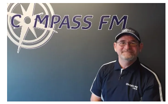
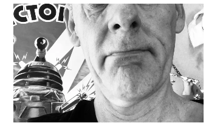
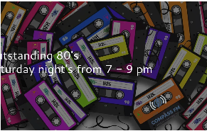
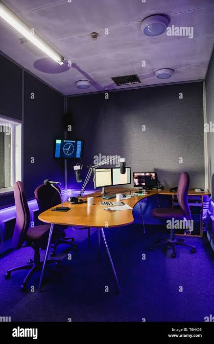

How To get in to radio
go up to a local radio station and ask to do some work experince for bordcasting or do a radio show make shoe you konw how to work a radio bord and the playlist and you need to
and you need to konw how to read
time on clock and you need to konw how to do a
voice brack and
you do not shut down the computers you
turn them of on
the button on the computer and bee good at radio and if you interested in radio go up to a radio station etc like compass fm and ask to do some work experince it is so fun to do
Follow this link to StationPlaylist.com


miter ten, mainpower, big daves car wash hurunui, hanmer springs, aaron clark prodly sponcer for compass news check brand mowers, alt kitching north canterbury bask ball compass fm 104.9 and 103.7
| Time | Event | Image |
|---|---|---|
| 00:00 - 06:00 | Compass overnight / mega music breckfist |  |
| 10:00 - 14:00 | Widest Music Variety Music Show begins her ALL DAY EVEY DAY with zane for middays on compass fm compass fm | |
| 14:00 - 18:00 | the big dive home with steph | |
| 10:00 - 14:00 | the afternoon with david |  |
| 19:00 to 21:00 | the outstandin 80s with jamie club compass at 9 till 10 rossiter |  |
compass
this is
overnight
mega music breckfist big
drive radio station clock 701 news sport wether traffic 720 ads 740 ads 801 news sport wether traffic 820 ads 840 ads home
compass
contry
compass dj bot the wides music viratey all day every day compass fm if you are in huanui or timaru /a> playit cart
well you can
lissing on
103.7 or 

wherer the
music come from it
comes zara radio from the radio
transmiitter and the
it singils to the ra station etc like compass fm the breez morefm and it more radio bordcasting website mixxx.org
gets sent to the
computer
and then it
playes over
air and it
gets
sent to the what you need to start a radio station you need pc playlist stoudo monters computer mics hp studio mixer on air sing a desk studio phone a tv proudison room and then it gets sent to theplay it live studio
and we play
it over air
and then we serch
it on the
playlist